створено на 7 тижні
(craft
(texture
(human touch
(process
(materiality
(rhythm
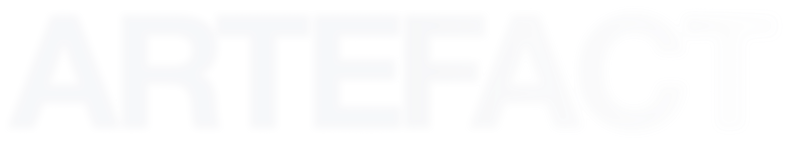
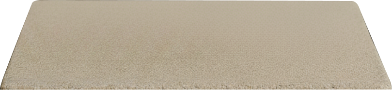
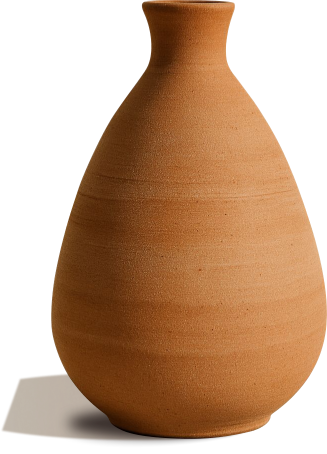
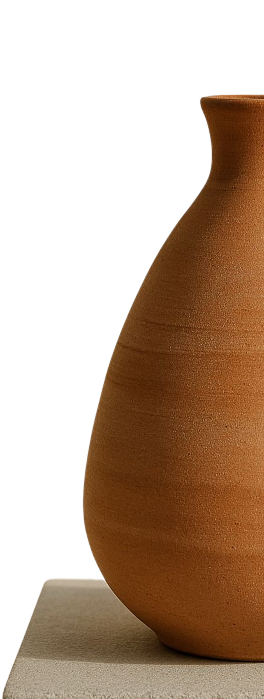
(яке об'єднує
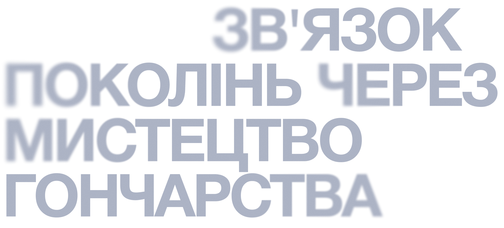
відроджуємо традиції майстрів
у цифрову епоху
мистецтво — яке
об'єднує
покоління
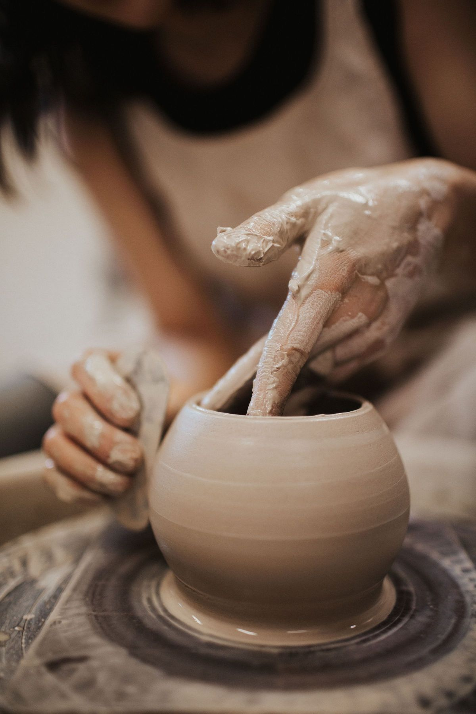
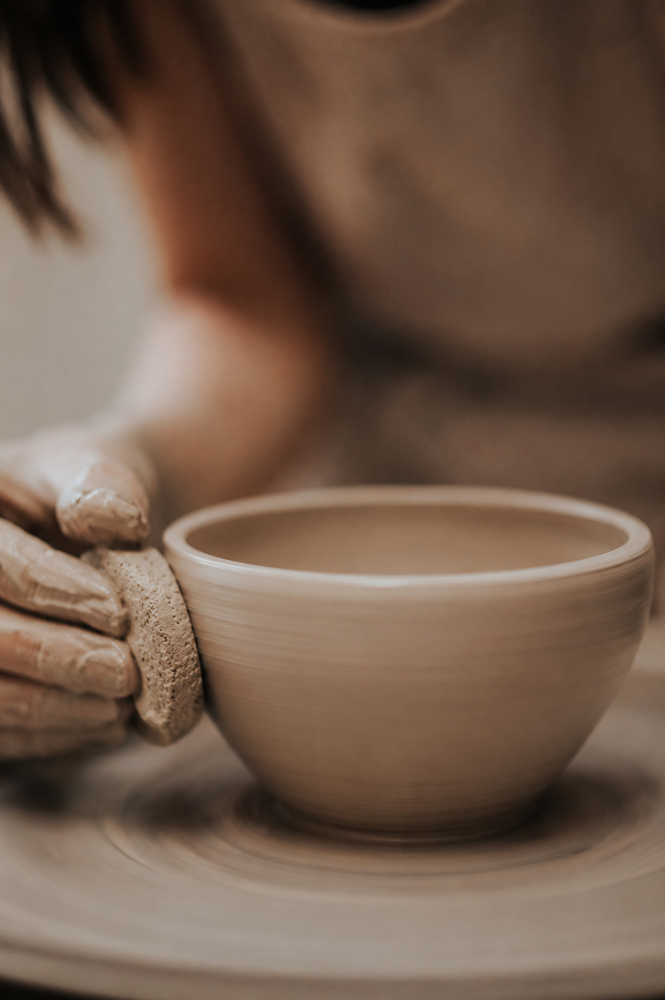
ви навчитеся втілювати цифрові задуми в унікальні вироби, де кожна лінія буде промовляти мовою вашої душі
free вебинар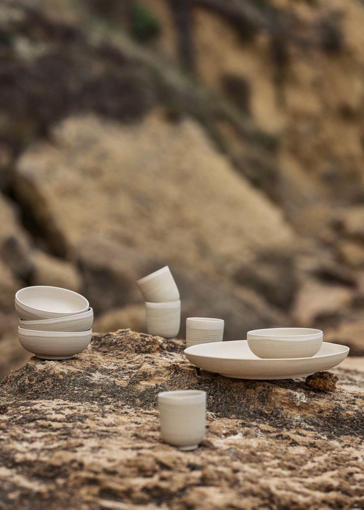
розвиває творчість
і дає справжню терапію для душі
розвиває творчість
і дає справжню терапію
для душі
ваші
руки
оживляють
у
форму
та
наповнюють
її
історією
як тисячолітнє
ремесло стає сучасним мистецтвом
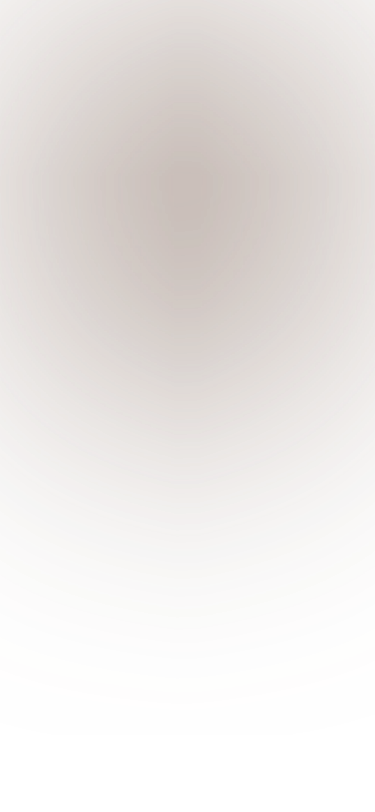
це чарівний міст, вони вміють оживляти абстрактні форми наповнюючи їх теплотою
та особистою історією
(глина)
це живий матеріал що шепоче історіями майстрів минулого. вона вчить вас терпінню, відкриває мудрість рук і нагадує, що справжня краса часто криється в легкій недосконалості
(роботи студентів
кожна робота тут — це унікальна історія, створена руками наших студентів
створено на 6 тижні
створено на 4 тижні
створено на 8 тижні
створено на 5 тижні
створено на 3 тижні
створено на 7 тижні
дозвольте цим образам розповісти, які неймовірні речі ви також зможете створити вже за кілька тижнів навчання
(роботи студентів
кожна робота тут — це унікальна історія, створена руками наших студентів
створено на 8 тижні
створено на 4 тижні
створено на 8 тижні
створено на 5 тижні
створено на 3 тижні
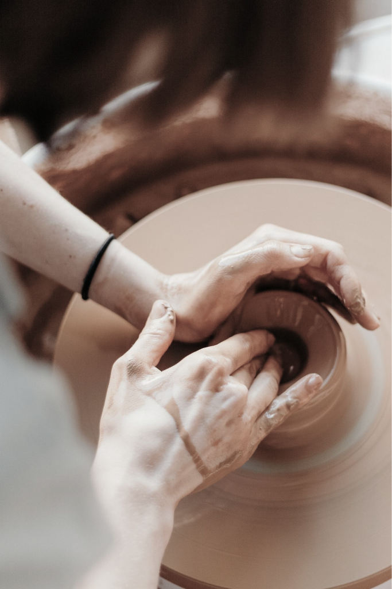
(наша філософія
вчимо відчувати історію
в кожному дотику до глини, розуміти мову предків і додавати до
неї власний голос.
це не просто навичка —
це міст між епохами, який ви будуєте своїми руками
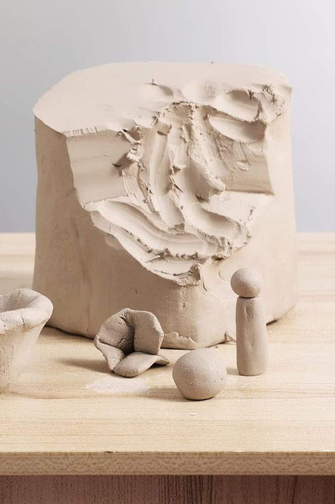
(наш підхід
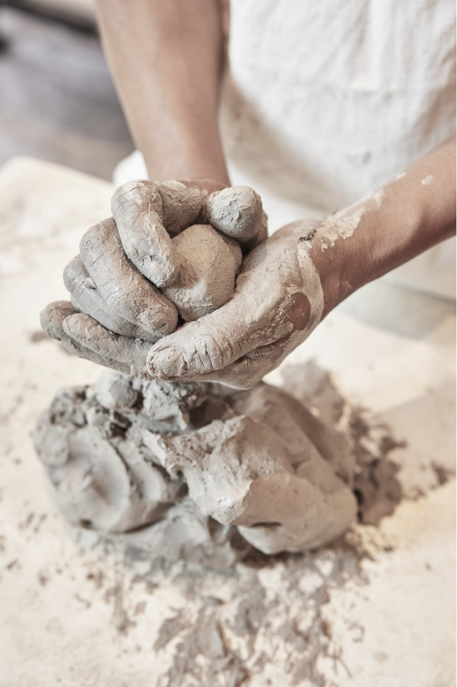
тут ви навчитеся не техніці, а мові глини. відчуєте, як тисячолітня мудрість майстрів оживає у ваших руках, перетворюючись на унікальні речі, що несуть відбиток вашої особистості
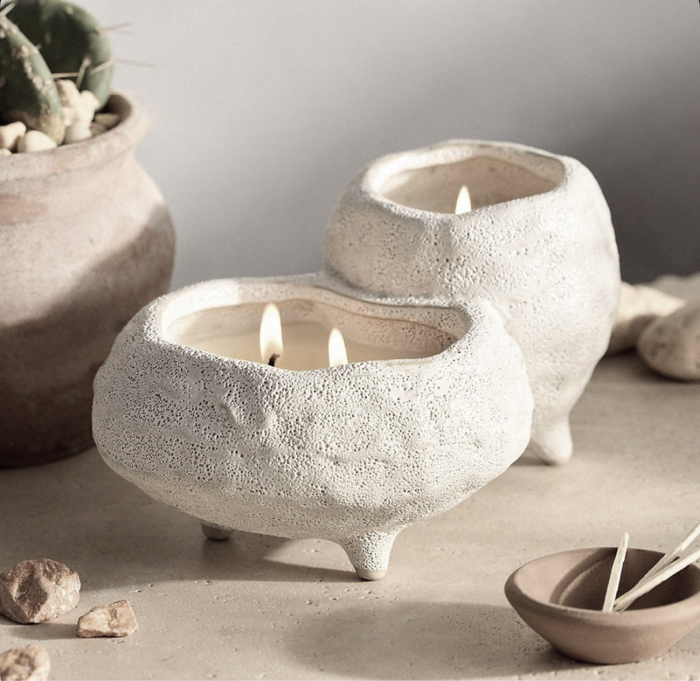
(наша філософія
вчимо відчувати історію в кожному дотику до глини, розуміти мову предків і додавати до неї власний голос. це не просто навичка — це міст між епохами, який ви будуєте своїми руками
(наш підхід
тут ви навчитеся не техніці, а мові глини. відчуєте, як тисячолітня мудрість майстрів оживає у ваших руках, перетворюючись на унікальні речі, що несуть відбиток вашої особистості
шлях від задуму до готової роботи
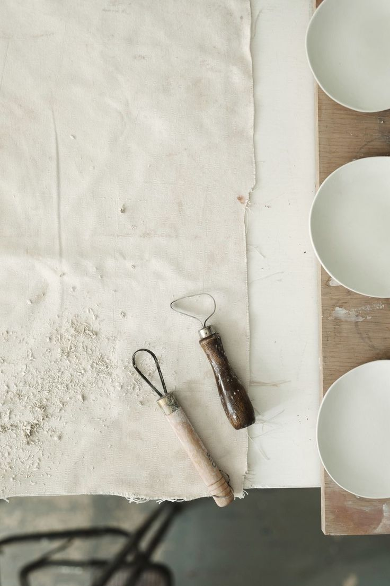
( 1 )
від образа в уяві до ескіза
перш ніж глина торкнеться ваших рук, ми допоможемо втілити задум. ви навчитеся переносити свої ідеї в прості програми, щоб побачити форму, відчути пропорції та створити ідеальний прототип майбутнього творіння
( 2 )
діалог з матерією
саме час оживити ваш ескіз. під нашим проводом ви опануєте танець гончарного круга, навчитеся розуміти «дихання» глини та направляти її в форму, що стане продовженням ваших думок
( 3 )
додаємо душу
на цьому етапі ми допоможемо вашому твору знайти свій голос. ви освоїте мистецтво фінішного декору, роботи з фактурами та професійної подачі, щоб ваше творіння стало вашою головною історією
шлях від задуму до готової роботи
( 1 )
від образа в уяві до ескіза
перш ніж глина торкнеться ваших рук, ми допоможемо втілити задум. ви навчитеся переносити свої ідеї в прості програми, щоб побачити форму, відчути пропорції та створити ідеальний прототип майбутнього творіння
( 2 )
діалог з матерією
саме час оживити ваш ескіз. під нашим проводом ви опануєте танець гончарного круга,
навчитеся розуміти «дихання» глини та направляти її в форму, що стане продовженням ваших думок
( 3 )
додаємо душу
на цьому етапі ми допоможемо вашому твору знайти свій голос. ви освоїте мистецтво фінішного декору, роботи з фактурами та професійної подачі, щоб ваше творіння стало вашою головною історією
ще не ?
готові почніть з безкоштовного уроку до
повноцінного курсу
( отримайте
вводний 2-годинний
відео-урок )
ще не
готові
до
повного
курсу ?
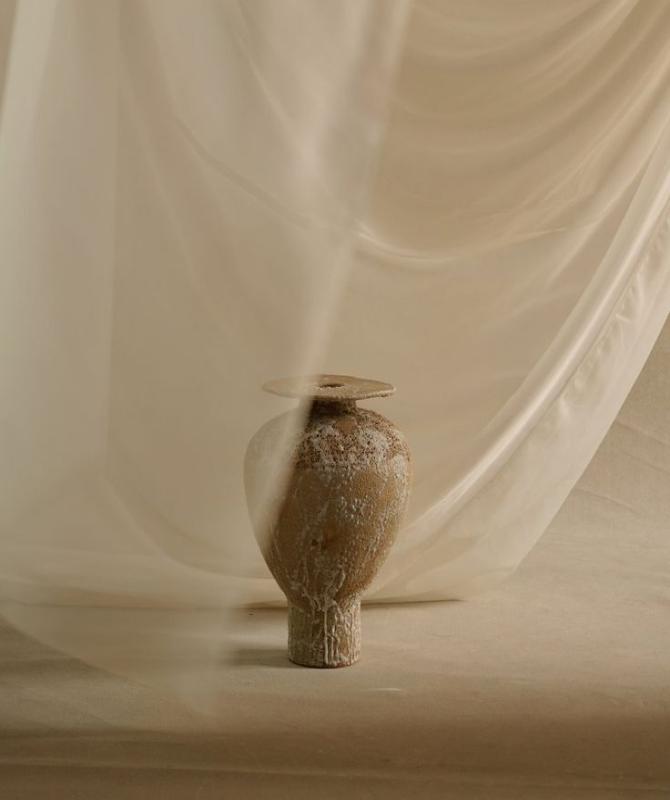
(отримайте
вводний 2-годинний
відео-урок )
(вироби студентів
вони такі ж люди, як і ви. вчителі, менеджери, коучі — усі змогли знайти щось своє у гончарстві
курс / професійний
курс / перший дотик
курс / професійний
курс / мова глини
курс / мова глини
курс / професійний
курс / перший дотик
курс / професійний
курс / мова глини
курс / мова глини
(вироби студентів
вони такі ж люди, як і ви. вчителі, менеджери, коучі — усі змогли знайти щось своє у гончарстві
«викладаю фізику в школі, цілий день — формули на дошці. глина стала протилежністю: тут нічого не треба доводити, просто відчувати руками»
«я архітектор. ця ваза — моя спроба перенести принципи форм з металу та скла на глину. ARTEFACT допоміг зрозуміти матеріал не як обмеження, а як новий простір для експериментів»
«дванадцять років пишу код, цілий день дивлюся у монітор. а тут — глина, яка не компілюється з першого разу, і це чомусь заспокоює більше за будь-який дедлайн»
«прийшла на перший урок просто зняти стрес після роботи. а вийшла з тарілкою, яку зробила сама вперше в житті — досі не вірю, що це я»
«я бухгалтерка, двадцять років рахую чужі цифри. на курсі вперше зробила щось руками від початку до кінця — і зрозуміла, що це не хобі, а спосіб дихати»
«працюю в рекламі, де все підпорядковане правилам і брифам. глина дала мені відчуття свободи, якого я шукала роками. ти можеш ліпити те, що відчуваєш»
«я завжди шукала спосіб перенести свої малюнки в реальний світ. глина дала мені цю можливість. тепер мої персонажі живуть не лише на екрані, а й на чашках, тарілках і вазах»
«я звик до швидких результатів — код написав, сайт запрацював. а тут все інакше. глина не поспішає. вона вчить чекати, спостерігати, приймати — це зовсім інше відчуття»
«тут не потрібно бути ідеальним — потрібно бути присутнім. це дозволило мені подивитися на свою роботу під іншим кутом і знайти гармонію між логікою та творчістю»
«я прийшла на курс у стані повного вигорання. думки про роботу не відпускали. а тут — ти залишаєшся наодинці з глиною. і вона не питає, хто ти і що в тебе сталося. вона просто є. і ти є. разом із нею»
(наші курси
пориньте в цей світ з комфортом для себе обирайте між
швидким зануренням, фундаментальним курсом чи індивідуальним шляхом
(ідеальний старт для тих, хто сумнівається
₴ 7,900 /міс
Тривалість: 4 тижні | Формат: офлайн
результат: готовий виріб, який можна забрати з собою після випалу
розпочати шлях(це ваш шлях від новачка до творця
₴ 17,900 /міс
Тривалість: 8 тижні | Формат: офлайн
результат: 5-7 готових авторських робіт, портфоліо, впевнені робочі навички
обрати курс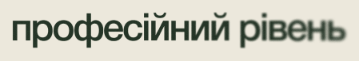
(ти вже знаєш основи і маєш сміливу ідею
₴ 37,900 /міс
Тривалість: 12 тижні | Формат: офлайн/онлайн
результат: готовий проєкт для портфоліо, колекція робіт або унікальний арт-об'єкт
забронювати місце(наші курси
(ідеальний старт для тих, хто сумнівається
₴ 7,900 /міс
Тривалість: 4 тижні | Формат: офлайн
результат: готовий виріб, який можна забрати з собою після випалу
(це ваш шлях від новачка до творця
₴ 17,900 /міс
Тривалість: 8 тижні | Формат: офлайн
результат: 5-7 готових авторських робіт, портфоліо, впевнені робочі навички
(ти вже знаєш основи і маєш сміливу ідею
₴ 37,900 /міс
Тривалість: 12 тижні | Формат: офлайн/онлайн
результат: готовий проєкт для портфоліо, колекція робіт або унікальний арт-об'єкт
приєднайтеся
до спільноти творців
200+
студентів навчилися
94%
продовжують творити
15+
занять щомісяця
3+
років традицій
приєднайтеся
до спільноти творців
200+
студентів
навчилися
94%
продовжують
творити
15+
занять
щомісяця
3+
років
традицій
(маєте питання
ми зібрали питання, які найчастіше хвилюють майбутніх студентів
так, і це питання ми чуємо найчастіше! наша методика розроблена спеціально для новачків. ми не віримо в «талант», ми віримо у структурований підхід. кожен етап — від цифрового ескізу до роботи з глиною — розбитий на зрозумілі кроки, які поступово розвивають ваші навички. переконайтеся в цьому, переглянувши роботи таких же новачків у блоці «історії успіху».
для старту потрібен мінімум! базовий курс включає техніки ручного ліплення, для яких потрібні лише прості інструменти (ми дамо їх перелік).
модулі з роботою на гончарному крузі проходять у нашій майстерні, все обладнання та матеріали вже включені у вартість.
а безкоштовний урок взагалі не вимагає нічого, крім вашої готовності спробувати
ми розробили програму так, щоб її можна було комфортно поєднувати з роботою та особистим життям. для успішного проходження курсу достатньо виділяти 3-4 години на тиждень. всі уроки записані — ви можете навчатися у зручному для вас темпі.
artefact / clay — це не просто курси гончарства. ми єдині, хто поєднує тисячолітню мудрість ремесла з сучасним дизайн-мисленням. ви не просто навчитеся крутити на гончарному крузі — ви пройдете шлях від ідеї до артефакту, навчившись спочатку проектувати форму в цифрі, а потім втілювати її в глині. наш фокус — на створенні унікальних предметів для сучасного простору.
ми цінуємо довіру наших майбутніх студентів. тому, якщо після проходження перших двох модулів ви вирішите, що курс не для вас, ми повернемо повну суму протягом 14 днів.
(маєте питання
ми зібрали питання, які найчастіше хвилюють майбутніх студентів
так, і це питання ми чуємо найчастіше! наша методика розроблена спеціально для новачків. ми не віримо в «талант», ми віримо у структурований підхід. кожен етап — від цифрового ескізу до роботи з глиною — розбитий на зрозумілі кроки, які поступово розвивають ваші навички. переконайтеся в цьому, переглянувши роботи таких же новачків у блоці «історії успіху».
для старту потрібен мінімум! базовий курс включає техніки ручного ліплення, для яких потрібні лише прості інструменти (ми дамо їх перелік).
модулі з роботою на гончарному крузі проходять у нашій майстерні, все обладнання та матеріали вже включені у вартість.
а безкоштовний урок взагалі не вимагає нічого, крім вашої готовності спробувати
ми розробили програму так, щоб її можна було комфортно поєднувати з роботою та особистим життям. для успішного проходження курсу достатньо виділяти 3-4 години на тиждень. всі уроки записані — ви можете навчатися у зручному для вас темпі.
artefact / clay — це не просто курси гончарства. ми єдині, хто поєднує тисячолітню мудрість ремесла з сучасним дизайн-мисленням. ви не просто навчитеся крутити на гончарному крузі — ви пройдете шлях від ідеї до артефакту, навчившись спочатку проектувати форму в цифрі, а потім втілювати її в глині. наш фокус — на створенні унікальних предметів для сучасного простору.
ми цінуємо довіру наших майбутніх студентів. тому, якщо після проходження перших двох модулів ви вирішите, що курс не для вас, ми повернемо повну суму протягом 14 днів.
Приєднуйтесь до нашого
творчого закутку
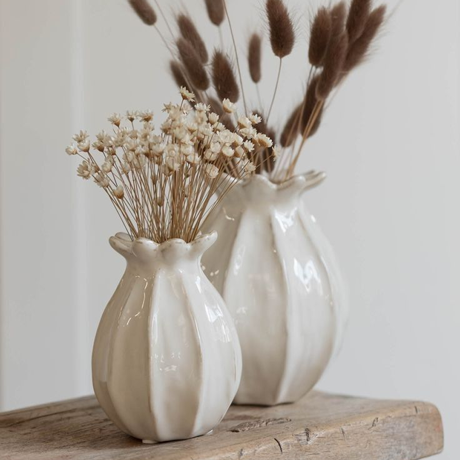
в соцмережах народжуються ідеї
які потім оживають
у глині
Приєднуйтесь до нашого
творчого закутку
в соцмережах — там народжуються ідеї, які потім оживають у глині